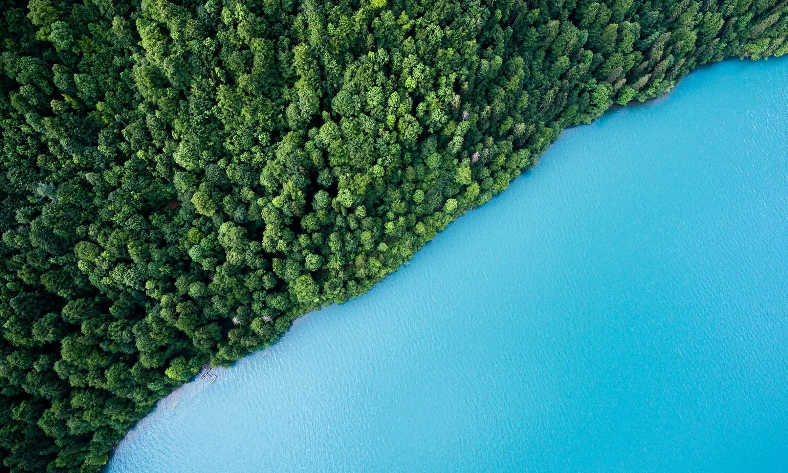
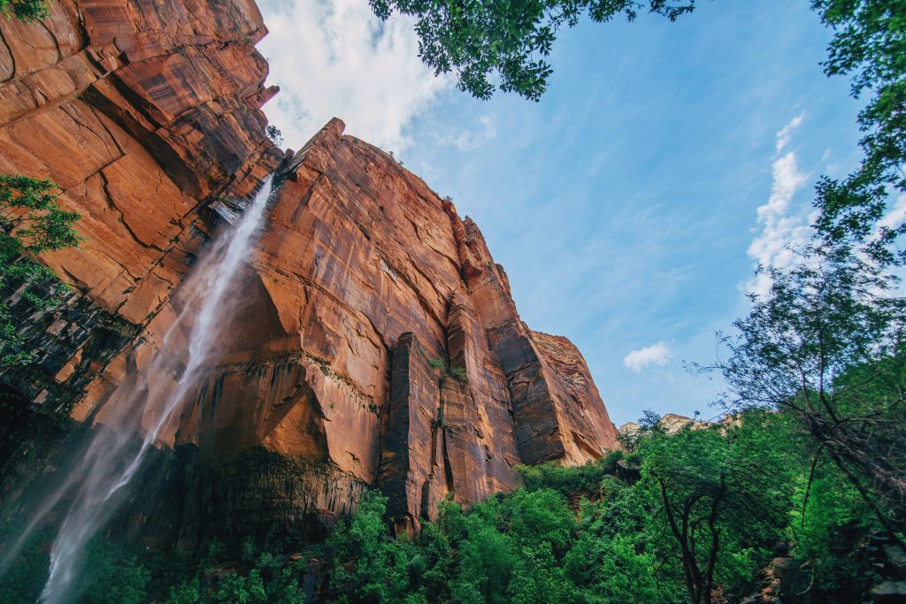

Natureza: o que é e diferentes significados
Descubra por que estabelecer uma definição e até mesmo um valor para a natureza pode ajudar na sua preservação
A ideia de “natureza” está no cerne da ciência, considerada como seu carro-chefe e elo mais profundo com as sociedades humanas. No entanto, embora a preservação da natureza tenha se tornado uma grande preocupação social, o conceito permanece indefinido.
Aparentemente, a palavra “natureza” na língua portuguesa agregou significados sucessivamente diferentes e às vezes conflitantes ao longo de sua história. Ela deriva do latim natura, que significa nascimento.
Um dos principais significados ocidentais do termo “natureza” difere um pouco das visões mais antigas. Pois designa o que se opõe aos humanos e abarcando meio ambiente, fauna, flora, ecossistemas, planeta e seus recursos naturais. Por isso, sua preservação deve levar em conta essa diversidade semântica na hora de propor políticas. Sempre integrando a relatividade e a imprecisão potencial da definição ocidental atualmente dominante.
O termo geralmente se refere ao “ambiente natural” ou à selva. Como animais selvagens, rochas, florestas, praias e, em geral, áreas que não foram alteradas pelos humanos ou que persistem apesar da intervenção. Por exemplo, objetos manufaturados e interação humana geralmente não são considerados parte da natureza. A menos que sejam qualificados como “natureza humana” ou “toda a natureza“.
Esse conceito mais tradicional implica uma distinção entre os elementos naturais e artificiais da Terra. Sendo o artificial aquilo que foi trazido à existência por uma consciência humana ou uma mente humana. 